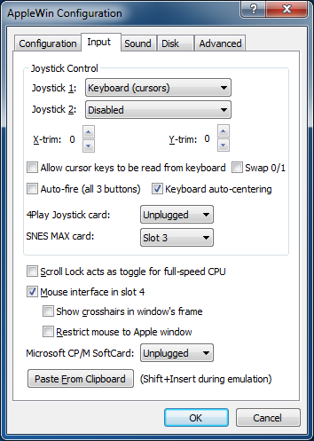

Input Settings

Joystick Control:
These options allow you to configure up to two joysticks attached to
the emulated Apple //e system.
- Joystick 1/2: Choose the emulation method for joysticks 1 and 2.
- X/Y-trim: These controls add a trim value to the
joystick X/Y offsets when the joystick is centered. Normally central
position is X=127, Y=127 so this adds the trim value for PC joysticks
& keyboard (centering). If you are using an analog PC joystick,
then you should leave these values at 0.
- Allow cursor keys to be read from keyboard: Applicable only in 'Keyboard (cursors)' mode.
- NB.
- Be aware that 'cursor-up' = CTRL+K, and 'cursor-down' = CTRL+J.
- When cursor keys are used for joystick emulation and are allowed to be read from the keyboard, then some games won't work correctly (eg. Lode Runner).
- When cursor keys are blocked from being read from the keyboard, then simple command-line cursor editing in AppleSoft won't work.
- Swap 0/1: Swap buttons 0 and 1 for all input devices.
- Auto-fire (all 3 buttons): For each button pressed, the button's state will be toggled when read.
- Keyboard auto-centering: When keys used for joystick emulation are released then the joystick will return to the central position.
4Play Joystick card:
On real hardware this card allows up to 4 Atari 9-pin joysticks to be connected.
Under emulation, the first 2 Windows-detected controllers will be used, and then for joysticks 3 and 4, use keys: ESDF+ZX and IJKL+NM. Note these keys will also be readable from the keyboard.
The card can be configured in slots 3, 4 or 5.
Since it only uses the slot's DEVICE SELECT space ($C0Bx for slot 3) then it can co-exist with an 80-column card in the Apple //e's AUX slot. NB. For a real PAL Apple //e, then a slot riser card is required for it to fit.
See Lukazi's 4Play card and 4Play card software blogs for more information.
SNES MAX card:
On real hardware this card allows up to 2 SNES controllers to be connected and all 12 buttons can be read.
Under emulation, the first 2 Windows-detected controllers will be used, ideally with 12 (or more) buttons eg. Logitech F310, PlayStation Dualshock 4, DualSense. Note that for some controllers (eg. 8BitDo NES30 Pro) the buttons need remapping, so use the command line switches -snes-max-alt-joy1 or -snes-max-alt-joy2 to remap.
The card can be configured in slots 3, 4 or 5.
Since it only uses the slot's DEVICE SELECT space ($C0Bx for slot 3) then it can co-exist with an 80-column card in the Apple //e's AUX slot. NB. This card is small, so no slot riser card is required.
See Lukazi's SNES MAX blog for more information.
Scroll Lock acts as toggle for full-speed CPU:
- When checked, you can permanently enable full-speed CPU when Scroll Lock is on.
- When unchecked, only when Scroll Lock is depressed will you get full-speed CPU.
Mouse interface in slot 4:
- Disables joystick emulation with mouse.
- Disables Mockingboard/Phasor in slot 4.
- Show cross-hairs in window's frame:
- Configure whether you want cross-hairs or not
- Restrict mouse to Apple window:
- Restricting is useful for paint applications
- When unrestricted, the emulated mouse is fully integrated with the Window desktop:
moving in and out of the AppleWin window will switch between Windows' and the Apple's mouse cursor.
- NB. Even when unrestricted, you won't be able to move the mouse outside the Apple window for GEOS. This is not a bug.
- Tip: Use Ctrl+Left Mouse Button to show the Windows mouse cursor (eg. essential for GEOS).
Microsoft CP/M SoftCard interface in slot 4 or 5:
- Emulates a CP/M card, complete with full Z80 emulation.
- Available when Mockingboard or Phasor isn't in slot 4 or 5.
Paste from clipboard:
Pressing this button will allow you to paste text from the
Windows' clipboard into the emulated Apple //e.